품질경영기사 (2009-03-01 기출문제)
1과목: 실험계획법
1. Lg(27에 4개의 인자 A, B, C, D를 주인자로 하여 다음 [표]와 같이 실험을 계획하였다. 두 인자의 교호작용에 관한 설명으로 옳은 것은?
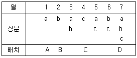
- 3열은 인자 A와 C의 교호작용항이 교락되어 있다.
- 5열은 인자 A와 D의 교호작용항이 교락되어 있다.
- 6열은 인자 C와 D의 교호작용항이 교락되어 있다.
- 주인자가 배치된 열 중 2인자의 교호작용항이 교락되어 있는 열은 없다.
(정답률: 86%)

2. 모수인자 A, B 의 수준수가 각각 l, m 이고, 반복 수가 2회인 2원배치 실험에서 랜덤화의 원칙으로 가장 적합한 것은?(오류 신고가 접수된 문제입니다. 반드시 정답과 해설을 확인하시기 바랍니다.)
- A, B 인자의 수준수와 반복수 2회를 고려한 모든 수준조합 2회의 순서를 랜덤하게 설계 하여 실험한다.
- A 인자와 B 인자의 수준조합 2lm회를 랜덤 하게 실험한 후 같은 방법으로 1회 더 실험한다.
- A, B 인자가 기술적 의미가 없으므로 수준이 나타나는 순서대로 lm 수준 내에서 각각 2회 반복 실험한다.
- 2인자 중 중요한 하나의 인자를 먼저 랜덤으로 순번을 결정한 후 나머지 인자의 각 수준에서 반복횟수를 고려하여 랜덤하게 실험한다.
(정답률: 59%)
3. 어떤 화학반응 실험에서 농도를 4수준으로 반복수가 일정하지 않은 실험을 하여 다음[표]와 같은 결과를 얻었다. 분산분석 결과 SE=2508.8 이었다. μ(A1)과(A4)의 평균치 차를 0.⑤ 로 검정하고자 한다. 평균치 차가 약 얼마를 초과할 때 평균치 차가 있다고 할 수 있는가? (단, t0.975(15)=2.131, t0.95(15)=1.753이다)
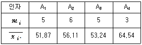
- 15.866
- 16.556
- 19.487
- 20.127
(정답률: 62%)
4. 인자 A의 수준수는 3, 인자 B의 수준수는 4이며, 각 수준조합에서 반복을 2회 실시하여 실험하였다. 다음의 [데이터]를 이용하여 인자 A의 수준 효과를 검정하기 위한 분산비(F0)는 약 얼마인가? (단, A는 모수, B는 변량인자이며, 풀링을 고려하지 않은 상태이다.)
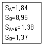
- 1.34
- 2.09
- 4.00
- 8.06
(정답률: 62%)
5. 난괴법에 대한 실험을 하여 [표]와 같은 분산분석표의 일부를 얻었다. 다음 중 옳지 않은 것은? (단, 인자 A는 모수인자, 인자 B는 변량인자이며, F0.95(4, 12)=3.26, F0.95(3, 12)=3.49 이다.)
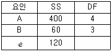
- 오차의 자유도는 12이다.
- 인자 B의 σ2B추정값은 2.5이다.
- 인자 A는 유의수준 5%로 수준간에 차이가 있다.
- 인자 B는 유의수준 5%로 수준간에 차이가 없다.
(정답률: 70%)
6. 교락법에서 각 반복마다 블록효과와 교락시키는 요인이 다른 경우를 무엇이라 하는가?
- 부분교락
- 단독교락
- 완전교락
- 이중교락
(정답률: 82%)
7. 선형식
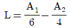
에서 A1=45, A2=34 일 때, 이 선형식에 대한 변동은 얼마인가?- 2.4
- 11.0
- 15.2
- 38.4
(정답률: 56%)
8. 망대특성 실험의 경우 특성치가 다음과 같을 때 SN 비는 약 몇 db 인가?
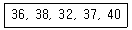
- -31.20
- -21.81
- 28.15
- 31.20
(정답률: 69%)
9. 어떤 화학공정에서 수율이 공정온도에 따라 어떤 변화를 일으키고 있는가를 알아보기 위하여 온도를 변화시켜가며 수율을 측정하였을 때, 수율을 무엇이라 표현하는가?
- 인자
- 수준
- 오차
- 특성치
(정답률: 67%)
10. 실험계획에서 필요한 요인에 대한 정보를 얻기 위하여 2인자 이상의 무의미한 고차의 교호작용의 효과는 희생시켜 실험의 회수를 적게 하도록 고안된 실험계획법은?
- 교락법
- 난괴법
- 분할법
- 일부실시법
(정답률: 73%)
11. 두 변수 x, y 에 대한 데이터로부터 단순회귀분석을 실시하였다. 회귀직선의 기여율은 얼마인가?
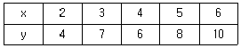
- 0.845
- 0.887
- 0.925
- 0.957
(정답률: 58%)
12. 1원배치법에 의한 다음 데이터에 대하여 분산 분석을 할 때 분산비(F0)의 값은 약 얼마인가?
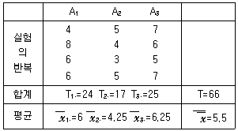
- 3.13
- 3.15
- 3.17
- 3.19
(정답률: 81%)
13. k 제품의 중합반응에서 흡수속도가 제조시간에 영향을 미치고 있다. 흡수속도에 대한 큰 요인 이라고 생각되는 촉매량()을 2수준, 반응온도 (Ai)를 2수준으로 하고 반복 3회인 형 실험을 한 [데이터]가 다음과 같을 때, B의 주 효과는 얼마인가? (단, Tijㆍ은 A의 i번째, B의 j번째에서 측정된 특성치의 합이다.)
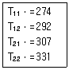
- 7
- 14
- 21
- 147
(정답률: 67%)
14. 1차 단위인자(A), 2차 단위인자(B)를 배치시키고 반복인자(R)로 단일 분할실험을 한 경우, 1차 단위 오차의 변동(SE1)를 구하는 식은?
- SAR-SR
- SAR-SA-SR
- SAR-SA×R
- SA×R+SA
(정답률: 66%)
15. 데이터의 구조식이 xijkp=μ+ai+bj(i)+ck(ij)+ep(ijk)인 실험에서 인자 A의 수준은 5, 인자 B, C의 수준은 각각 2로 하고 반복 2회의 실험한 결과, VA=168.85, VB(A)=32.06, Vc(AB)=8.81로 계산 되었다. 이때 SABC의 값은 약 얼마인가?
- 218.53
- 725.08
- 923.80
- 1341.⑤
(정답률: 72%)
16. 다음은 K사 작업자 5명 간의 부적합품률이 서로 차이가 있는 지를 조사하기 위하여 각각 150개씩 제품을 생산한 후 제품의 적합여부를 조사한 결과이다. 이 결과를 활용하여 작업자간 편차제곱평균 (MS)약 얼마인가?
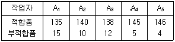
- 0.116
- 0.145
- 0.193
- 0.290
(정답률: 65%)
17. L27(313)형 직교표로서 교호작용을 무시하고 실험한 결과, 인자 A에 관한 1, 2, 3 수준별 실험데이터의 합이 다음과 같을 때 변동 SA는 약 얼마인가? (단, CT=10.8 이다.)
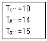
- 8.496
- 28.200
- 47.089
- 162.867
(정답률: 58%)
18. 인자 A, B, C가 각각 3수준인 3개의 인자를 선정하고 각 수준조합에 대하여 반복을 2회하여 실험하였을 때, 오차의 자유도는 얼마인가? (단, A×B×C 교호작용은 오차항에 풀링 하였다.)
- 8
- 27
- 35
- 53
(정답률: 69%)
19. 화학공장에서 3가지 재료(A, B, C)의 합성률이 형광물질에 영향을 준다고 할때, 3×3 라틴방격 실험에서 최적의 수준조합이
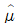
(A1B2C3)임을 알았다. 이 수준 조합에서 합성률에 대한 모평균의 95% 신뢰구간은 약 얼마인가? (단,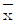
1··=75.6, ·2·=71.6, ··3=71.6,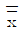
=69.88, VE=1.30, t0.975(2)=4.303, t0.95(2)=2.920 이다.)- 80.64±2.94
- 80.64±3.78
- 80.64±4.33
- 80.64±5.56
(정답률: 82%)
20. 다음 중 변량인자가 아닌 것은?
- 잡음인자
- 신호인자
- 집단인자
- 블록인자
(정답률: 64%)
2과목: 통계적품질관리
21. 어느 지역 유치원은 남자가 여자보다 1.5배 많다고 알려져 있다. 이 주장을 검정하기 위하여 해당 지역의 유치원을 임의로 방문하여 조사하였더니 남자, 여자의 수가 각각 120명, 100명이었다. 적합도 검정을 할 때, 검정통계량은 약 얼마인가?
- 2.64
- 2.73
- 2.84
- 3.11
(정답률: 59%)
22. 스킵 로트 샘플링 검사 절차(KS A ISO 2859-3:2001)에 관한 설명으로 옳지 않은 것은?
- 연속적 시리즈의 로트 또는 배치에 사용하는 것을 의도한 것이다.
- 인원의 안전에 관계하는 제품 특성의 검사는 이 규격의 샘플링 검사 절차를 적용하는 것이 좋다.
- 합격판정개수가 0인 1회 샘플링 방식은 이 규격에서는 사용하지 않도록 강하게 권고한다.
- 통상검사수준 하에서 보통검사 또는 수월한 검사 혹은 보통검사와 수월한 검사의 조합인 경우에만 실시된다.
(정답률: 55%)
23. 콘덴서를 만드는 공정에서 매일 300개씩 뽑아서 특성을 검사하고 있다. 20일간의 검사 결과, 발견된 부적합품의 총수가 300개이었다. 이 데이터를 이용하여 np 관리도를 작성한다면 관리한계는 약 얼마인가?
- 1.7~24.3
- 2.7~25.3
- 3.7~26.3
- 4.7~27.3
(정답률: 65%)
24. 분포곡선의 봉우리가 극대로 되는 곳의 가로좌표를 뜻하며, 확률 또는 확률밀도가 극대가 되는 것을 무엇이라 하는가?
- 최빈수
- 치우침
- 중앙값
- 기대치
(정답률: 83%)
25. 부적합품 혼입으로 인한 손실이 개당 1000원이고, 개당 검사비가 15원인 제품에서 로트의 평균 부적 합품률이 0.02인 경우 무검사에 비해 전수검사를 행함으로써 얻을 수 있는 검사 1개당 득실은?(오류 신고가 접수된 문제입니다. 반드시 정답과 해설을 확인하시기 바랍니다.)
- 5원의 이득
- 5원의 손실
- 10원의 이득
- 10원의 손실
(정답률: 43%)
26. A와 B의 두 부적합품으로 이루어지는 제품생산 공정에서 A는 20%, B는 30%의 부적합품을 가질 때, A와 B를 선별하지 않고 조립하였다면 부적합품률은 몇 %인가?
- 20%
- 30%
- 44%
- 50%
(정답률: 71%)
27. 개수치 샘플링검사 절차(KS A ISO 2859-1:2008) 중 분수합격 판정개수의 1회 샘플링방식에서 샘플링 방식이 일정하지 않은 경우 합부 판정 스코어의 계산법에 관한 설명으로 옳지 않은 것은? (단, 현재의 검사대상 로트에서 n개를 샘플링 검사하여 부적합품은 발견되지 않았다.)
- 만일 주어진 합격 판정 개수가 1/5이면 합부 판정 스코어에 2를 가산한다.
- 만일 주어진 합격 판정 개수가 1/3이면 합부 판정 스코어에 3를 가산한다.
- 만일 주어진 합격 판정 개수가 1/2이면 합부 판정 스코어에 5를 가산한다.
- 만일 주어진 합격 판정 개수가 1이상이면 합부 판정 스코어에 8를 가산한다.
(정답률: 84%)
28. 계량 규준형 1회 샘플링검사(KS A 3103:20⑤)에서 로트의 표준편차를 알고 있는 경우, 샘플링 검사의 적용 조건으로 옳지 않은 것은?
- 검사단위의 품질을 계량값으로 나타낼 수 있어야 한다.
- 부적합품률을 따르는 경우에는 특성값이 정규 분포를 하고 있어야 한다.
- 로트의 평균값을 보증하는 경우 KS A 3103:20⑤를 적용하려면 모표준편차를 알고 있어야 가능하다.
- 로트의 부적합품률을 보증하는 경우, 공정의 부적합품률이 10%가 초과되면 KS A3103:20⑤를 적용할 수 없다.
(정답률: 72%)
29. 계량치 검사를 위한 축차샘플링 방식(KS A ISO 8423:2001)에서 상한규격 200, 로트의 표준편차는 1.2이다. 이 규격에서 kA=4.312, kR=5.536, g=2.315, nt=49일 경우 누계샘플사이즈의 중지치에 대응하는 합격판정치는 약 얼마인가?
- 126.693
- 129.471
- 136.122
- 138.512
(정답률: 58%)
30. 전선을 납품하는 A 공장에서는 전선 100m 당 핀홀의 수가 13군데, B 공장에서는 100m당 핀홀의 수가 3군데가 나타났다. A 공장의 핀홀 수가 B 공장의 핀홀 수보다 많다고 할 수 있는 지에 대한 90% 신뢰상한을 추정하면 약 얼마인가?
- 3.420
- 4.872
- 15.128
- 16.580
(정답률: 53%)
31. A 공정에서의 제품 700개, B 공정에서의 제품 300개, C 생산 공정에서의 제품 1000개로 이루어진 로트에서 층별 비례 샘플링으로 220개의 시료를 채취하려면, C 공정에서는 몇 개를 채취하여야 하는가?
- 50
- 55
- 110
- 120
(정답률: 64%)
32. 시료의 크기가 5인
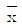
-R 관리도가 안정상태로 관리 되고 있다. 관리도를 작성한 전체 데이터로 히스토그램을 작성하여 계산한 표준편차(σH)가 19.5 이고, 군내산포(σw)가 13.67 이었다면 군간산포 (σb)는 약 얼마인가?- 13.9
- 16.6
- 18.5
- 19.2
(정답률: 71%)
33. 시료의 크기가 3인 시료군 30개를 측정하여
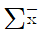
=609.9,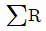
=138.0 을 얻었다. 이 때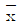
-R 관리도의 관리상한은 각각 약 얼마인가? (단, 군의 크기가 3일 때, A2=1.023, D4=2.575 이다.)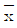
관리도 : 25.036, R관리도 : 11.845 관리도 : 25.036, R관리도 : 20.047
관리도 : 25.036, R관리도 : 20.047 관리도 : 32.175, R관리도 : 11.845
관리도 : 32.175, R관리도 : 11.845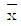
관리도 : 32.175, R관리도 : 20.047
(정답률: 62%)
34. Y 회사로부터 납품되는 약품의 유황 함유율의 산포는 표준편차가 0.1% 이었다. 이번에 납품된 로트의 평균치를 신뢰도 95%, 정도 0.⑤%로 추정할 경우 샘플은 몇 개 취하여야 하는가?
- 2
- 4
- 8
- 16
(정답률: 65%)
35. 다음 중 일반적으로 분포를 응용하지 않는 x2경우는?
- 정규분포의 적합성 유무를 검정할 때
- 2개의 모부적합품률의 차를 검정할 때
- 2×2 분할표에 의한 독립성을 검정할 때
- 지수분포를 따르는 평균수명을 구간추정할 때
(정답률: 50%)
36. 2개 회사의 제품을 각각 로트로부터 랜덤하게 뽑아 인장강도를 측정하여 다음의 [데이터]를 구했다. 두 회사 제품의 평균치 차에 관한 검정 결과로 옳은 것은? (단. σS=3kg/mm2, σQ=5kg/mm2 이다.)
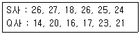
- 유의수준 1%, 5%에서 모두 두 회사 제품의 평균치의 차이가 없다.
- 유의수준 1%에서 두 회사 제품의 평균치에 차이가 있다고 할 수 있다.
- 유의수준 1%에서는 두 회사 제품의 평균치의 차이가 없으나, 유의수준 5%에서는 차이가 있다고 할 수 있다.
- 유의수준 5%에서는 두 회사 제품의 평균치의 차이가 없으나, 유의수준 1% 에서는 차이가 있다고 할 수 있다.
(정답률: 85%)
37. N(83, 22)을 따르는 품질특성치의 규격한계는 83±6이다. 중심선이 83인
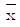
관리도의 관리한계의 폭이 규격공차의 1/4 이 되도록 하려면 필요한 시료의 크기는?- 4개
- 8개
- 16개
- 36개
(정답률: 74%)
38. X=(x-10)×10, Y=(y-70)×100으로 수치변환하여 X와 Y의 상관계수를 구했더니 0.5 이었다. 이 때 x와 y의 상관계수는 얼마인가?
- 0.0⑤
- 0.⑤
- 0.5
- 5.0
(정답률: 57%)
39. 모집단의 크기가 50, 모평균이 50, 모분산이 20인 유한모집단에서 10개의 표본을 추출하였을 때, 표본평균(
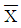
)의 표준편차는 약 얼마인가?- 1.278
- 1.414
- 1.633
- 2.001
(정답률: 39%)
40. 관리도를 이용하여 제조공정을 통계적으로 관리하기 위한 ‘표준값이 주어져 있는 관리도’에 대한 설명으로 적합하지 않은 것은?
- 이상원인의 존재는 가급적 검출할 수 있어야 한다.
- 우연원인의 존재는 가급적 검출할 수 없어야 한다.
- 변경점이 발생되어 표준값이 변할 경우 관리 한계선을 적절히 교정하여야 한다.
- 표준값이 주어져 있는 관리도는 공정성능지수를 측정할 수 없다.
(정답률: 63%)
3과목: 생산시스템
41. 능력관리에 대한 설명으로 옳지 않은 것은?
- 일반적으로 주문생산보다는 라인생산에서 주로 활용된다.
- 납품수량을 확보하며 적정 조업도를 유지하기 위하여 실행한다.
- 능력관리의 목표는 수요변동이나 부하 변동에 따라 일정관리를 하기 위함이다.
- 생산통제 단계에서 실제의 능력과 부하를 조사하여 양자가 균형을 이루도록 조정하기 위한 활동이다.
(정답률: 74%)
42. 다음 중 분산구매의 장점에 해당되는 것은?
- 긴급수요의 경우에 유리하다.
- 구매단가가 싸고 재고를 줄일 수 있다.
- 시장조사, 구매효과의 측정을 효과적으로 할 수 있다.
- 재고를 줄일 수 있다.
(정답률: 89%)
43. 각 작업의 작업시간과 납기가 다음과 같을 때 최단 처리 시간법으로 작업의 우선순위를 결정하려고 한다. 이 때 평균완료시간과 평균납기지연시간은 각각 몇 일 인가?
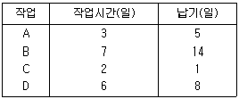
- 8.5일, 1.2일
- 9일, 2일
- 8.5일, 1.7일
- 9일, 2.5일
(정답률: 54%)
44. 다중활동분석표 중 2인 이상의 작업자가 조를 이루어 협동적으로 작업하는 경우의 분석에 사용되는 것은?
- Simo Chart
- Operation Chart
- Gang Process Chart
- Man-Multi Machine Chart
(정답률: 67%)
45. JIT 시스템과 MRP 시스템에 대한 비교로 옳지 않은 것은?
- JIT 시스템에서 납품업자는 동반자 관계로 보지만, MRP 시스템에서는 이해 관계에 의한다.
- JIT 시스템에서는 재고를 부채로 인식 하지만, MRP 시스템에서는 재고를 자산으로 인식한다.
- JIT 시스템에서 작업자 관리는 지시, 명령에 의하지만, MRP 시스템에서는 의견일치 등의 합의제에 의해 관리한다.
- JIT 시스템에서는 최소량의 로트 크기를 추구 하지만, MRP시스템에서는 생산준비비용과 재고 유지비용의 균형점에서 로트의 크기를 결정한다.
(정답률: 60%)
46. 실제 사이클타임 0.5분/개, 이론 사이클타임 0.4분/개, 총가공수량이 400개, 불량개수 50개, 부하 시간이 450분, 정지시간이 50분일때 성능가동률은?
- 35%
- 40%
- 44%
- 50%
(정답률: 58%)
47. 그림과 같은 자재명세서(BOM)를 갖는 X 제품을 200단위 생산하기 위하여 필요한 구성품 D, E 의 수는 각각 몇 개인가? (단, 괄호 안의 숫자는 각 구성품의 소요량이다.)
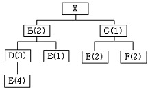
- D : 600개, E : 1200개
- D : 600개, E : 2400개
- D : 1200개, E : 2800개
- D : 1200개, E : 5600개
(정답률: 58%)
48. 어떤 조립라인에서 A, B, C 세 제품을 생산하고 있다. 이들 제품에 관한 자료가 다음 표와 같을 때 소진기간법을 이용하여 다음 생산시점을 구하면 언제인가?
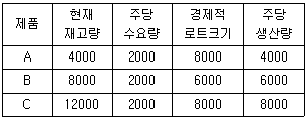
- 0.5주 후
- 1주 후
- 2주 후
- 4주 후
(정답률: 70%)
49. 어떤 생산라인에서 각 작업 단위별 소요시간이 [표]와 같을 때, 최소의 이론적 작업장수를 갖는 최대 공정효율은 약 얼마인가?(단, 시간당 목표 생산량은 80개이고, 총 작업시간은 28분이다.)
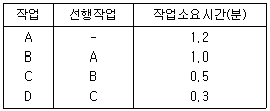
- 62.5%
- 83.3%
- 85.7%
- 95.2%
(정답률: 50%)
50. 비효율적인 동작이기 때문에 개선을 검토해야 할 서어블릭 동작은?
- 쥐기(Grasp)
- 쥐고있기(Hold)
- 내려놓기(Release Load)
- 빈손이동(Transport Empty)
(정답률: 67%)
51. 컨베이어 작업처럼 작업자 상호간에 보조를 맞추기 위해 발생되는 지연을 보상하기 위한 여유는?
- 조여유
- 장사이클여유
- 소로트여유
- 기계간섭여유
(정답률: 74%)
52. 7월의 판매실적치가 20000개, 판매예측치가 22000개 이었고, 8월 판매실적치가 25000개일 때, 7월과 8월 2개월 실적을 고려하여 지수평활법으로 9월의 판매 예측치를 계산하면 얼마인가? (단, 지수평활상수 a는 0.2이다.)
- 20880개
- 22080개
- 22280개
- 24080개
(정답률: 65%)
53. 생산계획을 위한 제품조합에서 A 제품의 가격이 2000원, 직접재료비 500원, 외주가공비 200원, 동력 및 연료비가 50원일 때 한계이익률은 얼마 인가?
- 37.5%
- 62.5%
- 65%
- 75%
(정답률: 70%)
54. 설비열화의 대책 중 열화방지와 관련이 있는 것은?
- 양부검사
- 경향검사
- 예방수리
- 설비청소
(정답률: 54%)
55. 인간이 작업시간을 통제하는 작업의 경우 워크팩터법의 4가지 시간변동요인 중 인위적 조절에 해당 하지 않는 것은?
- 이동(T)
- 방향의 조절(S)
- 주의(P)
- 일정한 정지(D)
(정답률: 63%)
56. 생산관리의 기본 기능을 크게 3가지로 분류할 경우 해당되지 않는 것은?
- 계획기능
- 통제기능
- 실행기능
- 설계기능
(정답률: 82%)
57. PERT/CPM 도입에 따른 장점이 아닌 것은?
- 효율적인 진도관리가 가능
- 문제점 예견과 사전조치가 가능
- 작업에 대한 자율성의 보장이 가능
- 최저비용으로 공기단축이 가능
(정답률: 74%)
58. 공정도에 사용되는 기호와 이에 대한 설명이 옳은 것은?
- ○ : 정보를 주고받을 때나 계산을 하거나 계획을 수립할 때에는 제외 된다.
- □ : 완성단계로 한 단계 접근시킨 것으로 작업을 위한 사전 준비작업도 포함된다.
- D : 공식적인 어떤 형태에 의해서만 저장된 물건을 움직이게 할 수 있을 때를 말한다.
- ➩ : 작업대상물의 이동으로 검사 또는 가공 도중에 작업자에 의해서 작업장소에서 발생되는 경우는 사용하지 않는다.
(정답률: 60%)
59. 다음 중 설비배치의 목적에 해당되지 않는 것은?
- 공간의 효율적 이용
- 설비 및 인력의 증대
- 안전 확보와 작업자의 직무만족
- 공정의 균형화와 생산흐름의 원활화
(정답률: 82%)
60. 일정계획의 주요 기능에 해당되지 않는 것은?
- 작업 할당
- 작업 설계
- 작업 독촉
- 작업우선순위 결정
(정답률: 56%)
4과목: 신뢰성관리
61. 다음 기호를 사용하여 신뢰성의 척도를 구하는 방법으로 옳지 않은 것은?
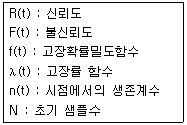
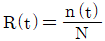
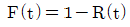
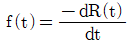
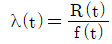
(정답률: 69%)
62. 샘플 9개에 대한 수명시험결과 각각의 시료들은 12, 25, 89, 3, 41, 22, 76, 69, 32시간째에 고장이 났다. 이를 평균순위법을 이용하여 추정할 때, 12시간 시점에서의 고장률 함수의 값은 약 얼마인가?
- 0.0085/시간
- 0.0100/시간
- 0.0125/시간
- 0.0143/시간
(정답률: 63%)
63. n 중 k 시스템에서 각 부품의 신뢰도가 R(t)=e-λ(t) 로 주어졌을 때, 시스템의 평균수명은?
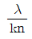
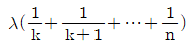
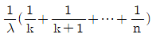
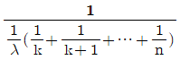
(정답률: 67%)
64. 다음 [표]는 고장평점법의 고장등급에 따른 고장 구분, 판단기준 및 대책을 나타낸 것이다. 내용이 틀린 등급은?
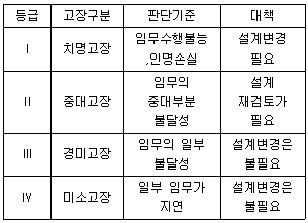
- Ⅰ
- Ⅱ
- Ⅲ
- Ⅳ
(정답률: 88%)
65. 지수분포의 고장시간과 수리시간을 갖는 어떤 장비를 관찰하여 다음과 같은 [데이터]를 얻었다. 이 장비의 가용도는 약 얼마인가?
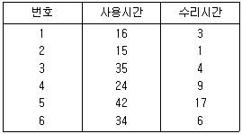
- 0.171
- 0.241
- 0.806
- 1.241
(정답률: 86%)
66. 고장률 함수가 일정형(CFR)인 경우 고장확률밀도 함수는 일반적으로 어떤 분포형태를 나타내는가?
- 지수분포
- x2분포
- 정규분포
- 대수정규분포
(정답률: 78%)
67. 신뢰성 샘플링 검사에서 MTBF와 같은 수명 데이터를 기초로 로트의 합부판정을 결정하는 것은?
- 계수형 샘플링검사
- 계량형 샘플링검사
- 조정형 샘플링검사
- 선별형 샘플링검사
(정답률: 79%)
68. 3개의 서브시스템 B1, B2, B3 로 이루어진 직렬구조의 시스템이 있다. 서브시스템 B1, B2, B3 의 실적 고장률이 각각 0.002, 0.0⑤, 0.004(회/시간)로 알려져 있을때, 20시간에서 시스템의 신뢰도를 0.9 이상이 되도록 하려면 서브시스템 B1에 배분되어야 할 고장률은 약 얼마인가?
- 0.00096
- 0.00176
- 0.0⑤27
- 0.18182
(정답률: 53%)
69. 300개의 전구로 구성된 전자제품에 대하여 수명시험을 한 결과 4시간과 6시간 사이의 고장개수가 22개이었다. 4시간에서 이 전구의 고장확률밀도 함수 f(t)는 약 얼마인가?
- 0.0333/시간
- 0.0367/시간
- 0.0433/시간
- 0.0457/시간
(정답률: 67%)
70. 평균고장률이 동일한 부품 개를 직렬형태로 연결하였을 때, 기기 전체의 평균수명은?
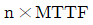
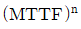
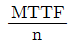
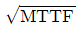
(정답률: 50%)
71. 지수분포를 따르는 어느 부품 10개를 샘플링하여 4개가 고장이 날 때까지 수명시험을 하였더니 각각 10, 30, 60, 100시간에 고장이 발생하였다. 이 부품의 고장률은 약 얼마인가?(단, 실험 중에 고장이 난 것은 고장 즉시 새 것으로 교체하여 실험을 진행하였다.)
- 0.004/시간
- 0.0⑤/시간
- 0.02/시간
- 0.04/시간
(정답률: 39%)
72. 어떤 장치의 고장수리시간을 조사하였더니 다음과 같은 데이터를 얻었다. 수리시간이 지수분포를 따른다고 할 때, 평균 수리율은 약 얼마인가?
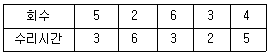
- 0.26/시간
- 0.28/시간
- 0.32/시간
- 0.55/시간
(정답률: 58%)
73. 고장목에서 기본사상의 중복을 간소화하기 위하여 사용하는 부울대수의 법칙으로 옳지 않은 것은?
- A+(AㆍB)=A
- Aㆍ(AㆍB)=AㆍB
- Aㆍ(A+B)=AㆍB
- A+(BㆍC)=(A+B)ㆍ(A+C)
(정답률: 56%)
74. 10개의 동일부품으로 구성되는 기기를 1000시간 사용하였을 때 이 기기의 신뢰도가 0.95 이었다. 10개의 부품 중 어느 하나라도 고장이 나면 이 기기의 기능은 상실된다. 기기를 구성하고 있는 부품 1개의 고장률은 약 얼마인가? (단, 각 부품의 고장은 지수분포를 한다.)
- 5.12×10-5/시간
- 5.12×10-6/시간
- 1.⑤×10-4/시간
- 1.⑤×10-5/시간
(정답률: 64%)
75. 다음 중 사용 신뢰성을 재고하는 방법이 아닌 것은?
- 사용자 매뉴얼의 작성 배포
- 조작방법을 제조업자에게 교육
- 예방보전 및 사후 보전체제의 확립
- 포장, 보관, 운송, 판매단계에서의 품질 관리의 철저
(정답률: 54%)
76. 재료의 강도는 평균 50kg, 표준편차가 2kg 인 정규 분포를 따르고, 하중의 크기는 평균 45kg, 표준 편차가 2kg 인 정규분포를 따른다고 한다. 이 재료가 파괴될 확률은 약 얼마인가? (단, Z 는 표준정규분포의 확률변수이다.)
- Pr(Z＞-2.50)
- Pr(Z＞2.50)
- Pr(Z＞-1.77)
- Pr(Z＞1.77)
(정답률: 65%)
77. 대시료 실험에 있어서의 신뢰성 척도에 관한 설명으로 옳지 않은 것은?
- 누적고장확률과 신뢰도 함수의 합은 어느 시점에서나 항상 동일하게 1로 나타난다.
- 어떤 시점 0 에서 까지 고장확률밀도 함수를 적분하면 그시점까지의 불신뢰도 F(t)를 알 수 있다.
- 어느 정도 시간이 경과하여 고장개수가 상당히 발생하였을 때, 그 시점에서 고장확률밀도함수는 고장률함수보다 크거나 같다.
- 어떤 시점 t와 (t+△t) 시간 사이에 발생한 고장개수를 시점 에서의 생존 개수로 나눈 뒤 이것을 △t로 나눈 것을 고장률 함수 λ(t)라 한다.
(정답률: 50%)
78. Y전자부품의 수명은 전압에 대하여 5승 법칙에 따른다. 전압을 정상치보다 30%증가시켜 가속 수명시험을 하여 얻은 데이터로부터 추정한 평균 수명은 정상수명시험에서 데이터로부터 추정한 평균수명에 비해 약 얼마나 단축되는가?
- 1/1.3
- 1/2.5
- 1/3.7
- 1/5.0
(정답률: 56%)
79. 지수분포의 수명을 갖는 어떤 부품 10개를 수명 시험하여 100시간이 되었을 때 시험을 중단하였더니 고장난 부품의수는 4개였고, 평균수명은 200시간으로 추정되었다. 이 부품을 100시간 사용한다면 누적고장확률은 약 얼마인가?
- 0.0⑤
- 0.393
- 0.500
- 0.607
(정답률: 62%)
80. 정수중단시험에서 고장개수가 0개인 경우 어떠한 분포를 이용하여 평균수명을 구하는가?
- 정규분포
- 포아송분포
- 이항분포
- 초기하분포
(정답률: 67%)
5과목: 품질경영
81. 측정장비가 마모나 기온, 온도 등과 같은 환경 변화에 의하여 시간 경과에 따라 동일 제품의 계측 결과가 다른 경우를 의미하는 것은?
- 안정성의 결여
- 재현성의 결여
- 정밀도의 결여
- 선형성의 결여
(정답률: 56%)
82. 산업표준화법 시행령에는 규정에 의한 산업표준화 및 품질경영에 대한 교육을 반드시 받아야 하는데, 이에 포함되지 않는 것은?
- 경영간부 교육
- 경영책임자 교육
- 내부품질심사요원 양성교육
- 품질관리담당자 양성교육 및 정기교육
(정답률: 56%)
83. 치우침을 고려한 공정능력지수(Cpk)를 산출할 때, 치우침의 의미에 대한 설명으로 옳은 것은?
- 공차와 자연공차와의 비율
- 공정의 평균과 규격한계와의 거리
- 목표치와 규격의 중앙값과의 거리
- 공정의 평균과 규격의 중앙값과의 거리
(정답률: 74%)
84. 품질관리 실시의 기대효과라고 볼 수 없는 것은?
- 품질이 좋아지고 필요한 시기에 공급된다.
- Top-down에 의한 관리의 장착이 이루어진다.
- 품질이 좋아지면 검사 및 시험 비용이 줄어든다.
- 부적합품률 감소로 수율이 향상되고 원가가 절감된다.
(정답률: 69%)
85. 다음 [데이터]에서 총품질비용에 대한 평가비용의 비율은 약 몇 %인가?
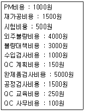
- 41.7%
- 44.4%
- 47.2%
- 50.0%
(정답률: 65%)
86. 다음의 A, B, C 3가지 부품을 B+C-A 와 같이 조립할 경우 이 조립품의 허용차는 약 얼마인가?
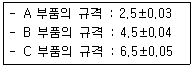
- 0.⑤7
- 0.060
- 0.071
- 0.120
(정답률: 67%)
87. 통계적 공정관리에 관한 개념을 가장 적절하게 설명한 것은?
- 공정에서의 부적합품 발생 예방활동에 치중하는 통계정보에 의한 피드백 관리 활동이다.
- 부적합품을 탐지하고 선별하는 것보다 부품 생산 업체를 정예화하기 위한 활동이다.
- 주로 부적합품을 탐지하고 관리하는 활동으로 샘플링 방법에 통계를 활용하는 활동이다.
- 규정된 조건하에서 규정된 기간동안 고객이 안정적으로 사용할 수 있도록 하는 활동이다.
(정답률: 54%)
88. KS A ISO 9000 : 2007(품질경영시스템-기본사항 및 용어)에서 규정한 용어의 정의로 옳지 않은 것은?
- 절차란 활동 또는 프로세스를 수행하기 위하여 규정된 방식을 말한다.
- 프로세스란 입력을 출력으로 변환시키는 상호 관련되거나 상호 작용하는 활동의 집합을 말한다.
- 추적성이란 고려 대상에 있는 것의 이력, 적용 또는 위치를 추적하기 위한 능력을 말한다.
- 시정조치란 잠재적인 부적합 또는 기타 바람직하지 않은 잠재적 상황의 원인을 제거하기 위한 조치를 말한다.
(정답률: 79%)
89. 품질관리수법인 신QC 7가지 기법의 특성으로 가장 거리가 먼 것은?
- 계획을 충실하게 하는 기법이다.
- 주로 언어데이터를 사용하는 기법이다.
- 산포의 원인을 조사해서 공정을 관리함을 목적으로 한다.
- 관계자 전원이 협력해서 문제해결을 조직적 체계적으로 진척시키는 데에 도움이 된다.
(정답률: 59%)
90. 제조품책임법에서 규정하는 용어의 정의에 대한 내용이 옳지 않은 것은?
- 제조업자 - 제조물의 제조, 가공 또는 수입을 업으로 하는 자도 해당한다.
- 제조물 - 다른 동산이나 부동산의 일부를 구성하는 경우를 제외한 제조 또는 가공된 동산을 뜻한다.
- 결함 - 당해 제조물에 제조, 설계 또는 표시상의 결함이나 기타 통상적으로 기대할 수 있는 안전성이 결여되어 있는 것을 뜻한다.
- 제조상의 결함 - 제조업자의 제조물에 대한 제조가공됨으로써 안전하지 못하게 된 경우를 말한다.
(정답률: 85%)
91. 버어만이 제시한 표준화 공간에서 표준화의 구조 중 국면에 해당되지 않는 것은?
- 시방
- 품종의 제한
- 공업기술
- 샘플링 검사
(정답률: 70%)
92. 모토롤라사에서 창안한 6시그마에 이르는 6단계의 순서가 바르게 배열된 것은?
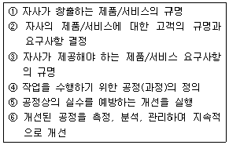
- ①-②-③-④-⑤-⑥
- ①-③-②-④-⑤-⑥
- ②-①-③-④-⑤-⑥
- ①-④-②-③-⑤-⑥
(정답률: 64%)
93. 산업표준화 및 품질경영 교육의 내용 중 품질관리 담당자의 교육내용에 해당되지 않는 것은?
- 통계적 품질관리 기법
- 사내표준화 및 품질경영의 추진 실시
- 사내표준화 및 품질경영 추진 기법 사례
- 한국산업표준(KS) 인증제도 및 사후관리 실무
(정답률: 58%)
94. 품질분임조활동의 기본이념과 가장 거리가 먼 내용은?
- 기업의 체질개선 및 발전에 기여한다.
- 인간성을 존중하여 보람있는 밝은 직장을 만든다.
- 이상적인 기업 활동을 유도하여 사회에 이바지한다.
- 인간의 능력을 발휘하고 무한한 가능성을 끌어낸다.
(정답률: 62%)
95. 품질관리업무를 명확히 하는데 있어 기능전개방법이 매우 유효한데 미즈노 박사가 주장하는 4가지 관리항목에 해당되지 않는 것은?
- 생산의 관리항목
- 기능의 관리항목
- 업무의 관리항목
- 공정의 관리항목
(정답률: 58%)
96. Single PPM 추진내용 중 현상파악 단계에서 추진할 내용이 아닌 것은?
- 요구품질 파악
- 3차원 대책수립
- 공정 현상조사
- 부적합유형 분석
(정답률: 67%)
97. 품질비용 중 '상품개발을 위한 소비자 반응 조사 비용'과 '부품 품질의 향상을 위해 협력업체를 지도할 때 소요되는 컨설팅 비용'을 순서대로 분류하여 나열한 것은?
- 예방비용 - 예방비용
- 예방비용 - 평가비용
- 평가비용 - 평가비용
- 평가비용 - 예방비용
(정답률: 60%)
98. 파이겐바움이 제시한 품질에 영향을 주는 요소 9M에 해당되지 않는 것은?
- Markets
- Motivation
- Money
- Maintenance
(정답률: 72%)
99. 다음의 커크패트릭의 품질비용에 관한 모형 중 B는 어떤 비용을 의미하는 것인가?
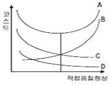
- 적합비용
- 예방비용
- 평가비용
- 관리비용
(정답률: 74%)
100. KS Q ISO 9001:2009(품질경영시스템-요구사항)에서 규정하고 있는 경영대리인의 역할이 아닌 것은?
- 품질경영시스템의 실행 및 유지
- 품질경영시스템의 개선의 필요성에 대한보고
- 조직 전체에 걸쳐서 고객요구사항에 대한 인식 증진을 보장
- 부적합 또는 부적합품이 고객에 전달되지 않음을 보장
(정답률: 69%)